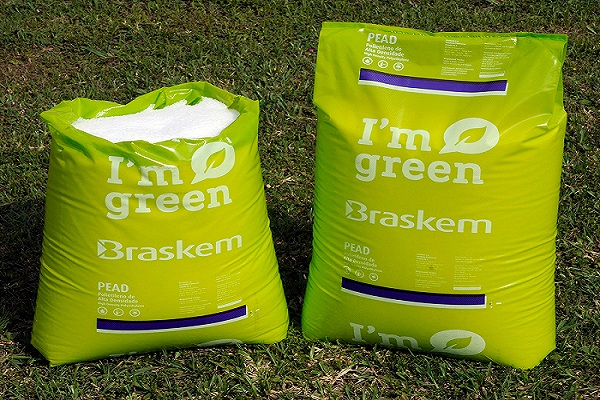
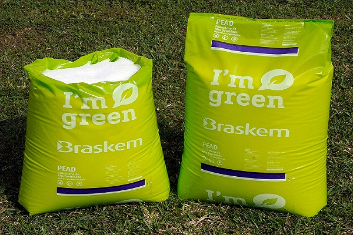

Meu projeto de TCC tem como base a produção de polietileno verde.
Polietileno verde é um tipo de plástico biodegradável que pode ser utilizado
para várias ocasiões diferentes, no meu caso eu irei testá-lós nos laboratórios
do IFMS, para ver se há alguma possibilidade de fazer a produção deles nas
dependências dos laboratórios do IFMS.
(Entrevista feita com Roberto)
 
